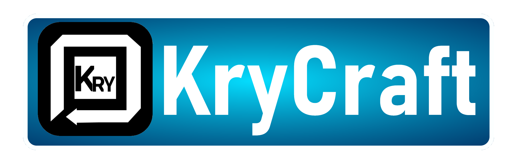

"It's A Work In Progress"
*Server and Website under development*
About:
LastCraft is a Minecraft server with the goal of creating a fun community, a fun place to hang out and build anything. There are many servers similar to LastCraft, however we have the goal of finding new mechanics and different ways to do things. From farms to elevators, LastCraft is focasing on the bleeding edge of what you can do in Minecraft. The sever runs the latest version of the game in order to keep new content and challenges, the server has multiple datapacks and pluggins in order to have more than one aspect. In order to keep an active community, people will be added and removed from the whitelist if they do not play on the server enough. Applications will be open soon.
Current Server Specs(Upgrades Planned):
Intel Celeron Dual Thread CPU
4GB Dedicated RAM
120GB SSD
Gigabit Ethernet
Ubuntu XFCE